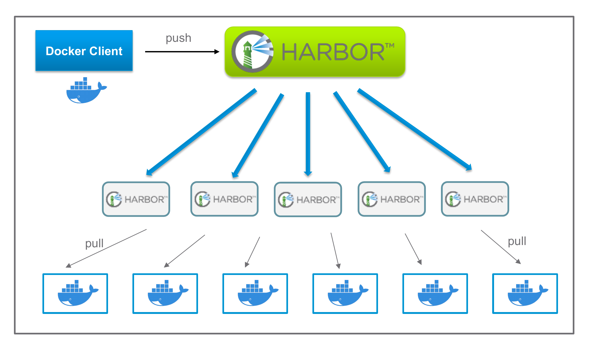
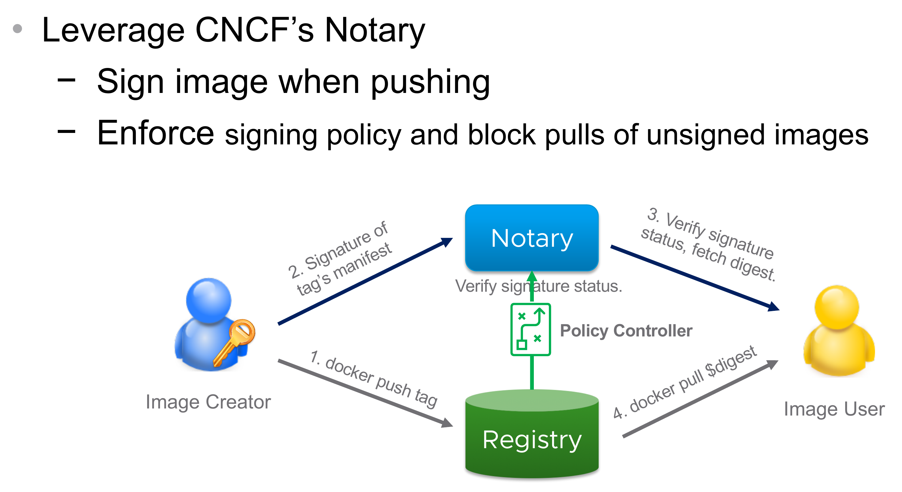

Harbor
Presentation about Harbor project
https://ruzickap.github.io/k8s-harbor-presentation
Created by Petr Ruzicka
Agenda
- Project introduction, history, development
- Features - RBAC, replication, vulnerability scanning, security
- Architecture
- Installation
- Helm charts operations
- Container images (replication, vulnerability scan, security)
- Project settings
What is Harbor?
Cloud native registry able to store container images and Helm Charts.
Container registries
- Docker Hub
- Quay
- GitHub Package Registry
- GitLab
- Azure Container Registry
- Google Container Registry (GCR)
- Amazon Elastic Container Registry (ECR)
- TreeScale
- Canister
Self-hosted container registries
- Docker Registry
- GitLab Container Registry
- Harbor
- Portus
- JFrog Artifactory
Development cycle
 https://cloud.vmware.com/community/2017/12/06/deploy-enterprise-grade-kubernetes-vmware-pivotal-container-service-pks/
https://cloud.vmware.com/community/2017/12/06/deploy-enterprise-grade-kubernetes-vmware-pivotal-container-service-pks/
Project history
https://github.com/goharbor/community/tree/master/presentations/deep_diveHarbor timeline
https://github.com/goharbor/community/tree/master/presentations/deep_diveHarbor Features
https://github.com/goharbor/community/tree/master/presentations/deep_diveAccess Control
https://github.com/goharbor/community/tree/master/presentations/deep_diveReplication
https://github.com/goharbor/community/tree/master/presentations/deep_diveHorizontal Scaling
 https://github.com/goharbor/community/tree/master/presentations/deep_diveGlobal Replication
https://github.com/goharbor/community/tree/master/presentations/deep_diveVulnerability Scanning
https://github.com/goharbor/community/tree/master/presentations/deep_diveImage signing
 https://github.com/goharbor/community/tree/master/presentations/deep_diveHarbor architecture
https://github.com/goharbor/community/tree/master/presentations/deep_diveHarbor Helm Chart k8s installation
https://github.com/goharbor/community/tree/master/presentations/deep_diveDemo
-
Presentation git repository:
https://github.com/ruzickap/k8s-harbor-presentation -
Presentation URL:
https://ruzickap.github.io/k8s-harbor-presentation -
Demo Git repository:
https://github.com/ruzickap/k8s-harbor -
Demo web pages:
https://ruzickap.github.io/k8s-harbor
Demo Architecture

Future plans for Harbor 1.9 (Spetember)
- Quotas
- Retention policy (remove old images)
- Ability to whitelist CVEs
- Allow transferring labels of Docker images (from your PC)
- Webhooks will be implemented
Thank you
-
Presentation URL:
https://ruzickap.github.io/k8s-harbor-presentation -
Demo web pages:
https://ruzickap.github.io/k8s-harbor